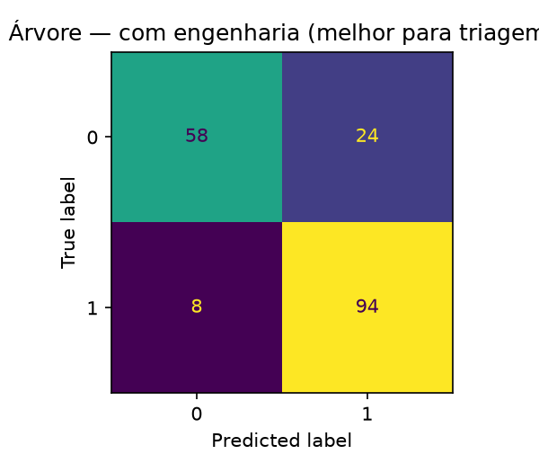

Predição de Doença Cardíaca — Árvore de Decisão
100%
1 / 15
APRESENTAÇÃO

Objetivo: avaliar uma Árvore de Decisão combinando tratamento dos dados, ajuste de hiperparâmetros e engenharia de features, com todos os experimentos registrados no MLflow.
| Atributo | Tipo | Descrição |
|---|---|---|
| Age | Numérico | Idade (anos) |
| RestingBP | Numérico | Pressão em repouso (mm Hg) |
| Cholesterol | Numérico | Colesterol sérico (mm/dl) |
| FastingBS | Binário | Glicemia em jejum > 120 mg/dl |
| MaxHR | Numérico | FC máxima atingida |
| Oldpeak | Numérico | Depressão ST por exercício |
| Atributo | Tipo | Descrição |
|---|---|---|
| Sex | Categórico | Sexo (M/F) |
| ChestPainType | Categórico | Dor no peito (TA/ATA/NAP/ASY) |
| RestingECG | Categórico | ECG (Normal/ST/LVH) |
| ExerciseAngina | Categórico | Angina por exercício (Y/N) |
| ST_Slope | Categórico | Inclinação ST (Up/Flat/Down) |
| HeartDisease | Binário | Alvo: 1 = doença, 0 = normal |
Heart Failure Prediction (Kaggle/fedesoriano), derivada do UCI Heart Disease, 918 registros × 12 colunas (11 atributos + alvo).
| Classe | Registros | Proporção |
|---|---|---|
| 1 — com doença | 508 | 55,34% |
| 0 — sem doença | 410 | 44,66% |
Cholesterol e 1 em RestingBP → tratados como ausentes (NaN).DecisionTreeClassifier.RepeatedStratifiedKFold 5 folds × 2 repetições.| Parâmetro | Valores testados |
|---|---|
| Imputação | median, mean, most_frequent |
| criterion | gini, entropy |
| max_depth | 3, 5, 7, None |
| min_samples_split | 2, 5, 10 |
| min_samples_leaf | 1, 3, 5 |
| max_features | None, sqrt |
| class_weight | None, balanced |
| Parâmetro | one-hot | ordinal |
|---|---|---|
| Imputação | median | most_frequent |
| class_weight | balanced | None |
| criterion | entropy | gini |
| max_depth | 3 | 3 |
| max_features | None | sqrt |
| Codificação | Acurácia | F1_c0 | F1_c1 | F1_macro | Recall_c1 |
|---|---|---|---|---|---|
| ordinal | 0,8098 | 0,7682 | 0,8387 | 0,8035 | 0,8922 |
| one-hot | 0,8207 | 0,8092 | 0,8308 | 0,8200 | 0,7941 |
| Feature | Fórmula | Motivação |
|---|---|---|
| FC_pct_teorica | MaxHR / (220 − Age) | % da FC máxima teórica |
| Chol_por_Idade | Cholesterol / Age | Colesterol relativo à idade |
| BP_por_Idade | RestingBP / Age | Pressão relativa à idade |
| Oldpeak_por_FC | Oldpeak / MaxHR | Depressão ST por batimento |
| Angina_x_Oldpeak | (ExerciseAngina == 'Y') × Oldpeak | Interação angina × ST |
| Cenário | Nº atributos | Acurácia | F1_c0 | F1_c1 | F1_macro | F1_CV |
|---|---|---|---|---|---|---|
| sem engenharia | 11 | 0,8098 | 0,7682 | 0,8387 | 0,8035 | 0,8604 |
| com engenharia | 16 | 0,8261 | 0,7838 | 0,8545 | 0,8192 | 0,7946 |
| Cenário | Acurácia | F1_c0 | F1_c1 | F1_macro |
|---|---|---|---|---|
| todos | 0,8098 | 0,7682 | 0,8387 | 0,8035 |
| sem RestingBP / Cholesterol / FastingBS | 0,8207 | 0,8136 | 0,8272 | 0,8204 |
| sem ST_Slope | 0,7772 | 0,7630 | 0,7897 | 0,7764 |
| sem MaxHR | 0,7500 | 0,6933 | 0,7890 | 0,7412 |
| sem Sex / ChestPainType / RestingECG / Oldpeak | 0,7391 | 0,7073 | 0,7647 | 0,7360 |

| Modelo | FN | Recall_c1 | F1_c1 | F1_CV |
|---|---|---|---|---|
| com_engenharia | 8 | 0,9216 | 0,8545 | 0,7946 |
| ordinal | 11 | 0,8922 | 0,8387 | 0,8604 |
| one-hot | 21 | 0,7941 | 0,8308 | 0,8550 |
No teste atual, o modelo com_engenharia apresentou o melhor cenário
para triagem, reduzindo os Falsos Negativos para apenas 8 (contra 11 e 21 dos demais),
mantendo os Falsos Positivos estáveis em 24.
Ressalva: Esse ganho não foi confirmado pela validação cruzada (onde o F1-Score caiu de 0,86 para 0,79). Como a base de teste é pequena (184 amostras), o resultado positivo pode ser apenas uma oscilação estatística do sorteio.
Os modelos com_engenharia e ordinal (8 e 11 FN) são os
dois promissores para a triagem.
heart_failure_arvore_decisao (SQLite
mlflow.db + artefatos em mlruns/).| Execução | O que mudou | Efeito |
|---|---|---|
| 22/10 08:18 | One-hot × ordinal + baseline | referência |
| 22/10 08:37 | + ablação (class_weight None/balanced) | balanced ≈ None |
| 22/10 09:31 | + engenharia de features | ganho no teste, CV caiu |
| 22/10 09:48 | variação de hiperparâmetros one-hot | piorou |
| 26/10 07:55 | métricas para as duas classes | versão final |
| Trabalho | Contribuição |
|---|---|
| Qadri et al. (2023), IEEE Access | Feature engineering para doença cardíaca |
| Abass et al. (2025), Springer | ML + feature engineering |
| Gárate-Escamilla et al. (2020) | Seleção de features + PCA |
| Hasnat et al. (2025), arXiv | Feature engineering + SHAP |
| Page et al. (1970), Circulation | Idade/colesterol na predição de DAC |
| Fox et al. (1971) | Fórmula FCmax ≈ 220 − idade |
com_engenharia: 8 FN, recall_c1 0,9216 e
F1_c1 0,8545; o ordinal é a alternativa mais robusta por possuir a melhor validação cruzada (11 FN, F1_CV 0,8604).
Os modelos com_engenharia e ordinal (8 e 11 FN) são os
dois promissores para a triagem. O próximo passo é validar em uma base de dados
externa.